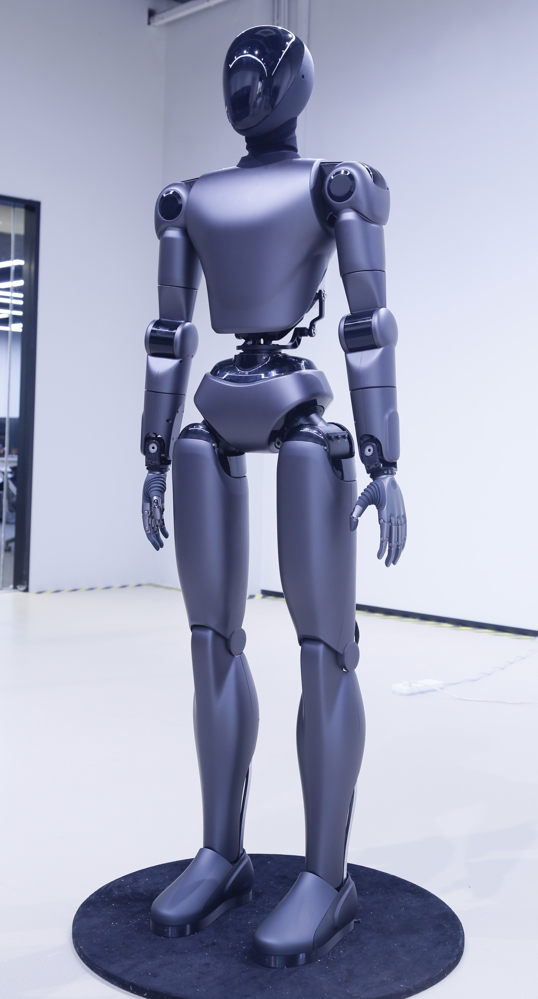

Outcome
Final prototype
The final robot moved from glossy concept imagery into a finished physical build with public-facing demo material, lab photography, and event documentation.
Industrial Design Portfolio
I led the full industrial design of DeepCybo Prime, a full-size humanoid robot developed at Zhongguancun Academy x Zhongguancun Institute of Artificial Intelligence. The project covered overall form language, CMF direction, joint and motor packaging, presentation imagery, and production-oriented 3D modeling.


Outcome
The final robot moved from glossy concept imagery into a finished physical build with public-facing demo material, lab photography, and event documentation.
Design logic
Surface continuity, torso proportion, limb taper, and shell break lines were developed together with joint motion ranges, module clearances, and visible hardware exposure.
Archive
This page now includes the final photos, videos, process renders, packaging references, details, and the broader media archive from the DeepCybo project folder.
Featured Project
A formal portfolio case study focused on the design journey from early visual exploration to the final full-scale humanoid robot.
01
The strongest story starts with the finished object. These images show the robot as a real product and not only a render target: public exhibition shots, lab photography, and close-up details of the built machine.
Featured Recognition
I was honored to see a robot I designed for DeepCybo, Prime, featured on the cover of The Journal of Physical Chemistry Letters (ACS). The cover image turns the robot into a scientific visual protagonist and extends the project beyond industrial design into a broader research and publication context.

02
After validating the physical presence of the final robot, the next layer is the concept work that shaped its silhouette, torso-to-hip relationship, and overall character. These images show the more exploratory phase before the form language was locked.
03
These are the render-based design passes that translated concept intent into a more resolved visual system. They are not the final photo outcome, but they show how the robot's stance, mask treatment, and surfacing were tested before the physical build was fully documented.
04
The later phase focused on CAD-driven refinement and packaging logic. Motor and joint positions directly informed shell boundaries, articulation clearances, and the openings that expose key mechanical components.
05
The motion clips and exhibition moments help show the robot as an embodied system in public-facing use rather than only a set of still images.
Additional Project
During the Noetix project, I designed the industrial form of Xiao Nuo, a compact biomimetic robot. The work focused on the facial proportions, neck structure, front interface framing, and the continuity between a human-like presence and manufacturable surface logic.
06
This section combines the CAD wireframe views with a real photo beside the built robot, so the project reads as both design development and a physically grounded product direction. The emphasis is on the face topology, neck transition, chest-screen framing, and the emotional tone of the upper body.